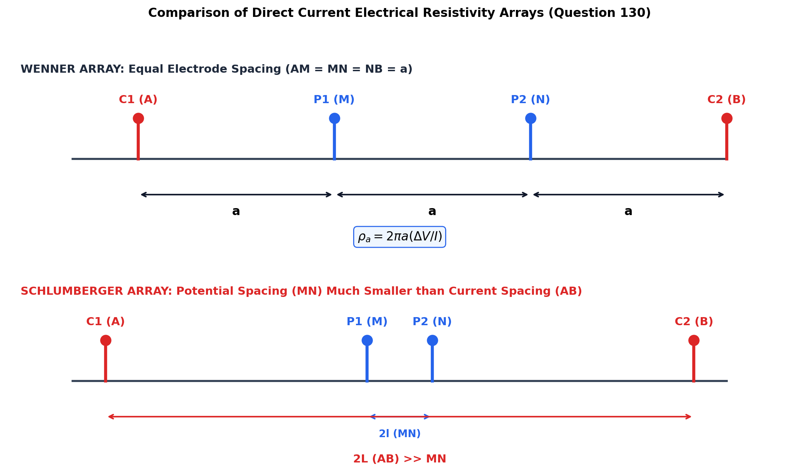
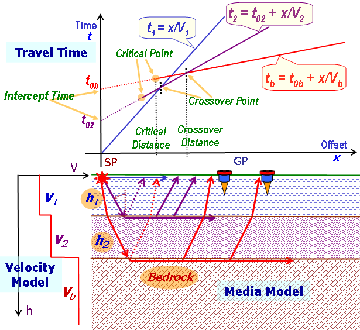
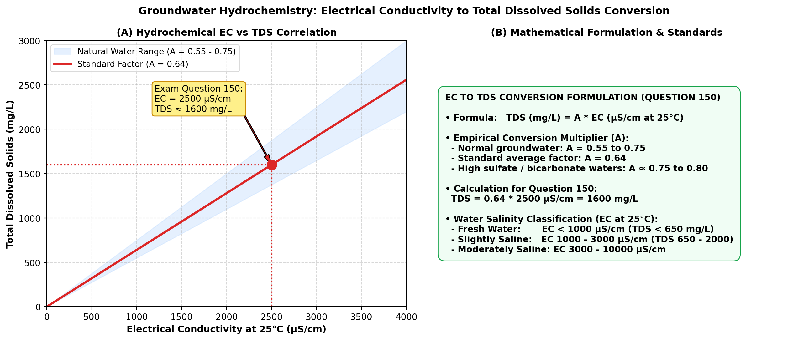

11.1 Field Work
a The geological field work is carried out to scarch mineral deposits and to explore round for many civil engineering works. During the geological survey sufficient data are gathered to prepare geologic maps and reports about a particular area of interest. ‘The equipments that are commonly required for doing a geological field Be work are as follows.
(i) Topographic map.(é) Compass Gif) Hammer r (iv)) Haversack (y) Altimeter.
(vi) Measuring tape (vii) Ficld notebook.cr:
Topographic Map.First the topographic map of the area to be inves- d investigated is procured, It is the most important tool of the geological field work. ‘The map should show topographic details on a sufficiently large scale, that is 2.5 km or 1 50,000. It serves us a hase map for systematic field a Work and geological mapping Compass. A magnetic compass is used for finding directions, taking " traverses and lucating one's own position on the map. The magnetic needle of the compass always points towards the magnetic north. The chief: compasses used by geologists for the field work are (a) “clinometer compass”, and (b) “Briution compass”. These compasses have sons additional arran: 364 PRINCIPLES OF ENGINEERING GEOLOGY cements for measuring dips of bedding planes. Branton in superior to, clinometer as it can also be used as a hand Jevel 4q 27 eS 3 a tC Fig. 11.1. Brunton compass. a The various parts of a Brunton compass are shown in Fig. 14.2. It consists of three units (2) a clinometer, used for measuring dip angles, (ay a compass, used for measuring directions, and (¢) a sighting device, used taking bearings and in hand laveling. While measuring dip, not only angie but direction of dip must also be noted. The sides of the body of Brunton are made plane and parallel. One of these sides is placed on an inclined bedding plane in the direction of dip. In this position the dial of the instru: ment lies in the vertical plane. The tube bubble of the clinometer is then centred by rotating a lever. The amount of dip is on the inner scale in ' The compass direction of tie horizontal line on an inclined plane, is E called “strike”. In order to measure a compass direction, the Brunton is held face up. It is then leveled by using the circular level bubble. The hinged mirror and sight help in taking bearings of selected points. The reacling of directions are taken on the outer circular scale, 4 Hammer, A hammer is essential for chipping rocks and collecting rock samples. Geological hammers generally have one chisel end and another flat end. The flat end is used for breaking rocks while the chisel end is used for trimming and sizing the specimens, The common field hammers may weigh 0.5 to 1.0 kilogram. Haversack. It is used for carrying compass, notebooks and rock samples collected in the field, 3 _Aimeter Aimer is barometer which is used for determining Along with compass, altimeter greatly helps ing outcrops in mountainous areas Greatly Delps in local Measuring $ as ing Tape. A steel of inetallic tape of 30 meter length and a p it pe tape of 2 ructer length is required for the field work. The first a aeons ons measuring traverse lines, etc, and the 4 6 shorter units such as thickness Of strata, veins, etc, 4 a 4 a FIELD WORK AND PROSPECTING METHODS " Field Notebed: A Rotcbook is used for keeping record of Peay. servations made in the field. Field notes should be brief ut clear ames contain the following information 1 1. The exact location of an outcrop ay a 2. Nature of the rock as scest in the outcrop, ss 3. Dip and strike of rock beds and other structural features like ripple marks, current bedding, etc 4, Location of samples collected.
5, Relation between different rock types bi 6. Any other special information: f,
11.1.2 Method of Field Work ep
Preliminary Survey.Before doing field mapping one should first un- “aa dertake a rapid reconnaissance of the target area by taking topographical Ses map. This will help in choosing suitable mapping procedures and in getting os the general idew about the geological problems. The reconnaissance traverses i. should be planned in such a manner as to come across the different rock types present in the area. This is usually done by moving along the direction of dip of rocks. wa Geological Mapping. After the preliminary survey detailed examination p is conducted and geological mapping is started. The traverses should be carefully planned and followed, and contacts between rock types are marked f on the topographical map. Whenever exposures of rocks are met with, they ( should be examined carefully. All available information-about the outcrop should be recorded in the ficld notebook. If necessary, sketches may he 4 drawn and photographs may he taken. (57&;75-@ B, 9:0) ene Representative samples of este! rocks of proper size (10cmx 7. conGhomexate GRANITE rote x 2.5cm) are collected for laboratory study. They are labelled pesca properly. The label should bear Oe sample number, the locality from sguegveNe Gunes which the samples are taken, name siisiasi of the rock, and other details about seven LA ras While marking the boundaries. “Say g uate z of rock types and making a a8 Oe geological map, the location and Pind altitude of contacts must be deter- a Me mined or inferred. On a ob ical man many locate LIMESTONE denise topographical tap many earitend 112, Lalelagical symbols. =o see be determined accurately Ras ar ad PRINCIPLES OF ENGINEERING GEOLOgy ape 4 7 nts, Cultural features thal..< "t ieee o armiy and variations in the soil colour. Portions of the bounties have to be interpolated benwecn exposures of 1510 Tiay types. seca a ion is covered and the Bcological y the whole area in question is The different rock unils are shown by different colourg. a a Saale (Fig. 11.2). Dip, strike, cleavae, joints, faults, etc.. are at, a A STRIKE AND DIP Pa FAULT es FAULT WITH 7 STRIKE AND MC AXIS OF SVWCLIWE a JOINTS HORIZONTAL we AXIS OF FoLD
Laboratory Work.After completing the field work, the rock samples are brought in the laboratory for correct identification, Thin sections of the ails are prepared and examined tinder the petrological microscope. Such the understanding of mineral composition and texture of the reck. A correlated picture of the geological structure of the area is also made during the laboratory work, 4 q Writing of Re le ieee us Bore ‘formation obtained from the field work and fellows k Pied in the form of 4 Heat report. Its outline is as a q (a) Introduction, BS (b) A brief account of the earlier work, if any ie (c) Statement of actual observations, findings and inferences made as a result of the field work and laboratory work. (d) The report should he secompanied by the prepared geological map and sections to show the geological structures and history of the area.
11.2 Prospecting Methods

The object of prospecting of an area is (i) to search ore deposits, (i) to know the nature of overburden, (iii) to determine depth, shape. size. and grade of ore deposits, (iv) Lo determine the geologic structures, and (v) to discover the ground water conditions. The mineral exploration includes two activities. The first is “prospecting” which is mainly concerned with the age outlining of mineral targets for exploration, and the second is “exploration” a which consists of proving of targets outlined during prospecting. The prospecting methods are broadly classified into two groups (/) airborne prospecting methods, and (ii) ground prospecting methods, 3 Airborne Prospecting Methods. The airhome prospecting methods F include “remote sensing methods” in which photogeelogical study is under- taken, and “aerial geophysical prospecting metliods”. By these methods large areas are covered quickly and target areas are outlined for ground r prospecting.
Ground Prospecting Methods.The ground prospecting methods are broadly classified into two groups (i) surface methods, and (ii) geophysical methods. La surface prospecting methods data are obtained by direct observation, Most of the information comes from natural exposures and artificial openings such as pitting, trenching, drilling, etc. In the geophysical methods. the information is obtained indirectly by studying the physical properties of rocks, 1. Surface prospecting methods 7 (i) Geological mapping. (ii) Test pitting, trenching, and aditing.
(iii) Augering and washboring.
(iv) Drilling xs 2.Geophysical methods one (i) Gravity methods ad () Magnetic methods (iii) Electrical methods (iv) Seismic methods. a AL.3. SURFACE PROSPECTING METHODS. Geological Mapping. Before starting the prospecting work, a target: ' area that can yield mineral deposits, is selected. Then its geological map is Prepared on a suitable scale, Such a map shows topography, rock outcrops, and structural features such as dip, strike, folds, faults, etc. This sort of map ' gives un idea of the Length and width of the deposit. I also serves as a base it map for planning out a trenching, pilting or drilling programme. a ‘Trenching. A “trench” is a qarrow linear excavation which is mude to. i. expuse ore bodies concealed under soil cover. The tenches may be 6 to 9 meter long, to 1.5iucter wide, and 2 to 2.5 meter dcep. They are commonly dug across the strike of the ore body, at intervals of 15 to 150 meters. The spacing of renches depends upon the consistency of data. Prospecting by” trenching is generally done when the orc outcrops are narrow and the soil) caver is thin (about one meter). The trenching gives reliable information about the geology, structure, extension and grade variation of the ore body. Ht ‘This method has been adopted as a major prospecting method in may i-on id ore and bauxite Pitting. Thoiprocess of digging rectangular openings to penetralc soil. 4 cover to reach oft tinies concealed iifiderneath is called “pitting”: The q ie depth of ahout 10 meters beyond which they become very expensive, t Piuting is a very useful method of prospecting those ore bodies which arc et flat or gently dipping and lying ncar the ground surface. For steeply dipping oe ore bodies and those having linear and narrow outcrops, pitting would not be favourable. The pattern of the layout of the pits may be regular or oh irregular. In a regular system pits are sunk in rows in grid or triangular pattern. Pitting is an important method of prospecting in many bauxite and 4 se 5) iron are deposits. a ne Aditting. The “adits” we horizontal openings which are dug in terrain to explore ore bodies. An adit many be driven across or along ay the strike of rocks. [I should be dug in such a way so that later stage it “a could be used as an opening for exploiting the ore 4 of Augering and Washboring. Augering and washboring are commonly 1 q used prospecting of flat and homogeneous deposits like clays which are 4 ma concealed under a thin cover of softandunconsolidated materials, “Auger Pe Sole method of putting down holes of about 2.5 cm in diameter co His screwed into gi a Tinipe aa 2 attached to the upper end, Ne eround by turning T-pipe a P In “wastboring” a hole is dug as 4 water through the wash-pipe, The Bile pees ay rite a jet of comes to the surface a8 2s “Suspension in water where it is examined and identified. 4 FIELD WORK AND PROSPECTING METHODS 389 4 Dritling. Drilling is an important method of prospecting subsurface rocks and ore deposits. In drilling data are collected by direct penetration base ‘of subsurface rocks by drill holes. The samples of rocks arc obtained in the seek form of cylindrical cores or rock fragments, The drill holes provide the Ra following informations. 1. Size, shape and morphatogy of the ore body.
2. Geological structures and number of lodes present. " 3. Nature of the host rocks.
4. Composition and grade of the ore body.During prospecting, drill holes are located at certain intervals in certain directions depending upon the regularity of the orc body and its structure, In most cases, the test holes are drilled systematically in a grid pattern. In re this pattern, the system of “diminishing squares" is adopted. First a gird of perce large squares is Jaid out and the holes are drilled at each comer of the Lica squares. In case of simple deposits the grid lines may be kept 300—400 aa meters apast, while in complex and intricate deposits, this interval may be reduced to 200—300 meters and 100—200 meters respectively. Subsequently for closer examination, each grid is subdivided into four small squares and more holes are drilled at their comers. Thus systematic are obtained for the entire deposit. For every drill hole cores should be carefully logged and vertical sections of the geological formations penetrated should be prepared. The positions of drill holes are marked properly on the base map of the area, and a map showing variations of grade of the ore is prepared. Then the portions P af it which have the proper tenor of ore are delineated and the area computed for estimating the reserve. f
11.4 Geophysical Prospecting
In geophysical prospecting certain physical properties of the under- ground rocks are measured from the surface. The properties of racks measured commonly density, magnelismn, electrical conductivity and ore elasticity. In the radiometric surveys mainly the y-ray (gamma-ray) os radiations are micasured. The measured data are then interpreted to give information about the presence of ore bodies, buried anticlines, faults, neous intrusions, and other geological structures. The main geophysical Prospecting methods are as follows. pe 1. Gravity methods. 2. Magnetic methods.
3. Electrical methods.Re 4. Seismic methods. a?
11.5 Gravity Methods
4g The gravimetric survey is based on the measurement of density cony ras between the anomaly producing body and the surrounding rock. Use. (i) The gravity methods are used chiefly for the exploration p oil and gas. These have been used successfully for outli anticlines, buried ridges, igneous intrusions, faults and c geological structures. q (i) The gravity survey has also been utilized for the exploration of metallic ore bodies such as massive sulfide ore, iron ore, and chromite ore, Method. The instruncats which are commonly used to measure gravitytonal deflections are; (/) pendulum, (i) torsion balance, and (if) gravimeter Of these the gravimeter is the most useful. For covering larger areas rapid I) airborne gravity survey is done. a In the area of search, raver- (v) ne ses are laid at suitable intervals. 5 a Then the values of gravitational 2 f r a deflections are measured at 4 predetermined points. The read- ' ings thus obtained are plotted on 4 graph with distances on x-axis and deflections on the y-axis, [f a mn oe. no dense rock or a massive ore hody pee” a Me is present in the area, the graph eM ORE sony a will show an anomaly in the form |". °° ho of a peak as shown in Fig. Let et The difference between the nor- STRUCTURE FECTION value and the observed value Fig. 11.4, Showing gravity profile of deflection is called “anomaly”. of an ore body, ___ The gravity data can also be interpreted by contouring the anomaly. In this casc the gravity anomaly for each station is plotted on a base map and hate lines of equal gravity anomaly are drawn in the same way as contour cs, 11.6, MAGNETIC METHODS 7 q The magia antiee are based on the Measurement of value of q magnetic field is measured “at component of the earth's Use. (i) The mapnetj " a ie he used widely for the exploreif magnetic ore lies such its of magnetite, pyrrhotite and ilmenite, as deposits of i: 4 (it) At places faults may bring together rocks of different magnetic properties. Hence they may be delineated from magnetic A (iii) The magnetite and pyrrhotite are more abundant in basic igneous rocks than in acid rocks. Hence the former be detected by the magnetic surveys.
(iv) Certain mineral deposits which contain magnetic minerals in subordinate amount, such as magnetite with asbestos and pyrrhotite with base metals, can detected by magnetic surveys.
Method.The magnetometers are used to measure the magneuc intensity of the ground at various stations. For covering large areas rapidly, airborne magnetic surveys are conducted. In the area of search, Uraverses are laid at suitable intervals. Then the values of magnetic intensities are measured at closely spaced stations. For euch station, the observed value is compared with the normal value, The difference between them is the “magnetic anomaly”.
The values of anomaly are plotted on a base map. Then the lines of equal magnetic anomaly are drawn in the same way as contour lines. From such a map, the area of the magnetic body can be readily delineated. The anomaly data may also be interpreted by constructing magnetic profiles in the same way as done for gravity data (Fig. 11.4).
11.7 Electrical Methods

The electrical methods |e current-“"? are uscd mainly for the ex- [owes ot ploration of metallic mineral (Z 5 deposits. The electrical survey inethods are of four types () self potential method, (i) equipatential method (ii) PLAN electromagnetic method, and (iv) resistivity method. g a OT Ne ]
11.7.1 Self Potential Focy2y252 Sate BAS SANE 8
- a tltarairie) Ar rn DO tain ore bodies, particularly those containing sulfide SECTION minerals when subjected to Fig. 11.5. Showing self potential currents of an ore body: 392 PRINCIPLES OF ENGINEERING oxidation, produce electrical currents. These currents are called “tellurie currents”. By measuring these currents the presence of the hidden ore body can be detected. a
11.7.2 Equipotential Method
The equipotential method is best suited to shallow deposits in the regions not too It can be used to locate orc bodies in the glacial drift and for determining structure beneath the soil. This method is also used to study the geological formations with steep or vertical contacts such as igneous intrusions. 4 Method. The into the ground by means abe d £5 7 of two line electrodes. A “line se, |) ot 1 4 ge electrode” is a bare copper wire 3 rfipaupap ty. pee which is pegged into the ground $ Eds at intervals (Fig. 11.6). The cur- 2 taht Aaa rent flows between them through t A rN terence in potential. $ the line electrodes. This is shown 1 aula 3 in Fig, 1.6 by dotted lines a,b, leds ' ¢, etc. On the other hand, if an ore a oe OE a than the surrounding rock, is Present in the ground, the lines of Fig. 11.6. Equipotential method. equal potential will be distorted. This is s 7 1, 2,3, etc., Hence by noting the paeoaat) in the Figure by solid lines hidden ore body can be demarcated. 11 He eauipotential lines, the 5 11.7.3, Electromagnetic Method 7 Out of the electrical q favoured method for search of tis electromagnetic method is the most ore bodies. It is more precise and yields greater information regarding shape, size and position of the body. The electromagnetic method can be used for a mountain region, dry sands and ice covered ground. e my When an alternating current is passed through a conductor, induced currents are produced around it. If a conductor, such as an ore body, lics within the induced field, it sets up a secondary induced currents around it which can be measured.
Method.A rectangular loop of insulated cable is placed on or above the ground. Then an alternating current is supplied to the q loop (Fig. 11.7). The loop Boke & sets up a “primary magnetic ing ground which coin diminishes with distance q Lie ie from the loop. cong 2 3 If a conductor (ore body) is present within the ground, a “secondary field” ~) is induced about the conduc- Fig. 11.7. Electromagnetic method tor. Because both the primary and secondary fields are present at the same place the primary field gets distorted. The ore body is outlined by measuring the distortion by sensitive receivers, In order to detect the distortion, traverse lines are laid normal to the longer axis of the leop and normal to the hidden ore body (Fig. 11.7). These traverse lines are then surveyed by the receiver. If the ground is uniform, the readings of the field will decrease with distance. On the other hand if un ore body is hidden in the ground, the readings will rise at the boundary of the ore body as shown in Fig. 17.
11.8 Resistivity Methods
In resistivity surveys the amount of resistance met by an electric current which is passed through a portion of the earth, is measured. The measure of resistivity is presumed to be a measure of the fluid content and porosity of rocks. Therefore the resistivity measurements help in making distinction between saturated and unsaturated rocks, and also between rocks of differing Porosity.
Uses.The resistivity surveys are very effective in the investigation of horizontal or gently dipping rocks. These are used in detecting the following.
1. The thickness of overburden or depth to bed rock is determined very accurately. 2. The resistivity surveys have been used in the exploration of the s placer deposits and bedded deposits. 394 PRINCIPLES OF ENGINEERING GEOLUqy 3. The resistivity methods have been used widely for the exploration of groundwater. In regions of gentle dips the presence of aquifer, s can be determined. 4 4, Fault zones may be determined as they contain electrolyte in solution. g a 5. Resistivity surveys can be used for discovering the subsurta ice structure and lithology. The buried anticlines can be traced by determining depths to strata of greater or lesser resistivity. Hence they are also used in the exploration of petroleum. 3
11.8.1 Wenner Method. In resistivity surveying various electrode ar
rangements are employed but the arrangements shown by Wenner is widely used. In the Wenner method the spacing between the electrodes are kept equal. In Fig. £1.8 this spacing is'designated as ‘d*. The current is introduced into the ground by twa current electrodes C, and C,, and the potential difference Q A PL co §
11.8.2 Resistivity Traversing
This method is also called “resistivity ing”. Wi 4 " trenching”. IL is used to inves dale T ied Pee in the horizontal direction at constant depth. along 2 cement OF the electrodes are kept constant while they are moved niga, line: The resistivity measurements are made at various stations. From the data thus obtained, the resistivity curves are drawn by plotting the distance of stations 0 X-axis a 4 ab ons On X-axis and resistivity he ¥-axis.
An abrupt change in the Curvature of a resistivity a a a hange ature A SUVILY profile indicates a chan, in the nature of the underlying material (Fig, LS, indicates I SEAL THE Deri by 453.9:97- 95
11.8.3 Resistivity Sounding
This method is used to in- RESISTIVITY nt ohms/— face strata at depth. In resis- |") tivity sounding, the resistivity [4] is measured by increasing the |<] 1c electrode separation progress- sively about a central fixed fa z point ‘x’ (Fig. 1.8). rs) 2 electrodes is increased, the depth of penetration of the current is also increased. In this way the { ' data on variation of resistivity & with depth we fssig, The Fig 1.10. Raivio shin avert are drawn by plotting the cop ate ten resistivity values on X-axis and electrode spacing on F-axis (Fig. 11.10).
11.9 Seismic Methods

In seismic methods, the variations in the seismic wave velocity are measured in different rock layers. The values of the seismic velocities are obtained from the time-distance curves. Since this velocity is directly proportional to the density of rocks, by noung the differences in the velocities, the structure of the subsurface rocks can be worked out. hg ling rigs and recording Method. In seismic surveys, truck mounted drilling systems are uscd. Small charges of explosives are detonated in shallow boreholes drilled in the surface rocks. The seismic waves (hus generated are transmitied through the rocks and are picked up by a series of geophones carefully spaced along a line of traverse [Fig. 1.11 (ani RECORDING PDINTS 7 (A) 9 TIME MARK EVety 0-01 BECOND a cB) “i 7 ints and geophones along a line
11.9.1 Refraction Survey
The seismic waves undergo reflections and refractions at the rock boundaries.-In the refraction method only the refracted waves are recorded and used for determining the structure of rocks. The refraction survey is commonly used for the following.
(f) For determining the structure of rocks lying at relatively shallow 4 depth. It is widely used for civil engineering explorations.
(ii) For the location of shallow salt domes and the oil pools associated with them.
11.9.2 Reflection Survey i
In this method the reflection waves from reflecting surface are” recorded and used for determining the rock structures. The reflection survey is generally used for deep explorations (600 meters ore more). Hence itis widely used for oil exploration. This method accurately delineates the subsurface structural traps and salt domes.
11.10 Radiometric Surveying T
he radioactive elements, such as uranium-238 and thorium-232, con- slantly undergo a process of disindisintegration. During disindisintegration icant radiations of three types (i) o rays, (ii) B rays, and (if) These are the beams of positively charged particles. 5 of helium atoms (2 protons 2 These particles are the nuclei of Ay of kilometers neutrons). They trivet with velocities of thousand per second.:
(ii) B-Rays.These are the beams of negatively charges! particles. 4 travel faster than & rays. (iii) y-Rays, These are the rays of very short wave length like Srays, They travel with velocity of lightand have a very high Peneirating power. OF the three above said radiations, only the y-rays are useful from the point of view of radiometric surveys. The instruments commonly used for radiometric surveys are (i) Geiger Mueller counters, and (ii) scintillation 4g counters. a Geiger Mueller Counter. This instruments is fitted with an ionization 4 chamber, meters and count registers. These make it possible to measures the fr intensity of y-rays. 4 The y-rays are detected by the ionization chamber. This chamber consists of a closed tube containing an ionisable gas under pressure. An electrical potential is applied to produce an electrical field inside the tube. As a result the positive ions move towards the negative electrode and the negative ions towards the positive electrode. A beam of incoming ¥-rays librates a large number of ions inside the tube and produces an impulse of electri current, a ft, Scintillation Counter. This is a very sensitive instrument which measures the intensity of y-ryas (gamma rays) in terms of electrical signals, —
1.10.1 Types of Radiometric Surveys ;
Depending on whether the measurements are made from air, at the ground, or along drill holes, the radioactive Surveys are classified into three groups (i) airborne radiometric Surveys, (11) ground radiometric surveys, and (iii) radioactive logging of bore holes. a Airhorne Radiometric Surveys. In airborne surveys, scintillation counters are used for recording the ‘y-rays from the air. These Surveys are usually carried out along with the acromagnelic and aeroelectromagnetic a Surveys. By airborne radiometric surveys the deposits of radioactive sub- iq stances and boundaries between various rocklypes may be outlined.
Ground Radiometric Surveys.The ground radiometric surveys are used mainly (i) to search deposits of radioactive substances, and (ii) to q Outline geological structures such as faults, (@ To Search De Posits of Radio-active Ores, ground surveys, the 4 yo Commonly used to detect the intensity of yrays. as posit Which is hidden beneath a thick cover of E tl, may be detected because most of the radioactive emana- 4 tions are absorbed by the soil cover, such of the hidden deposit decay. a ch a case the detection elements from the of the radioactive 4 team Us tnigration is caused in two ways a stances may migrate in solu fer the deposition of the ore. and (b, josie oe the radon which is the gaseous 3 figLo WORK AND PROSPECTING METHODS member of the radioactive series nay diffuse through the over: lying cover.
The process of migration of radioactive elemen in the formation of an “aureole”, or in the localization of suiay tivity along faults or fissures. By detecting these cl ore body may be outlined. nes. the hidden (i) To Outline Faults. Certain groundwaters contain radon and soluble radioactive materials in appreciable amounts. Faults con- 2 taining such radioactive fluid may be outlined by measuring varia. tions in the radioactivity of rocks.
Radioactive Logging.The “radioactive logging” is an operation in which y-ray counts of various rock formations met in a borehole are recorded continuously along the depth, This depthwise record is called “radioactive log”. The radioactive logging is used for (i) correlating rock beds, and (ii) determining porosity and permeability of rocks.
(® For Correlating Rocks, Every rockformation contains some natural radioactivity in measurable degrees. As a rule, acid rocks arc more radioactive then basic rocks. Because different rocks have different amount of radioactivity, they may be correlated by, using this criteria.
Gi) For Determining Porosity. The radioactivity counts of different rocks vary with their densities. The more dense rocks have higher values of radioactivity than those of less dense rocks. Hence from the density, the porosity of rocks may be determined.
11.11 Geochemical Prospecting
The geochemical prospecting is very ¢effective is locating deposits of base metals, such as Cu, Pb, Zn, etc. In India this method is used commonly for this purpose. The essential principle of geochemical prospecting is as follows.
1. Samples of the surface soil or sediment of the target area are taken systematically from grid points. the 2. The metal content of the samples are determined precisely by rapid geochemical analyses.
3. The distribution of the metal content in the surface soil or sediment is determined by plotting the values on a base map of the large! area, q 4. Then the comparison of these values is made with the known “background” values.
5. This comparison will give the {stea about the presence of the mineral deposit hidden below the ground. 400 PRINCIPLES OF ENGINEERING GEO. 9, in steps involved in the geochemical analyses, and (/if) interpretation of data (i) Sampling. The geochemical prospecting of a target area is 5 with the collection of samples. The samples of surface ], sediment, water or rock chips are collected at regular inter Generally a large number of samples are collected from grid po at fixed intervals. The grid lines are drawn transverse to the of the suspected zones of mineralization. (a) Soil Sampling. The soils always contain mineral partic present in the parent rock. The soils caped over the o re commonly shows anomalously high values of metal centration, In soil sampling, the samples weighing gm. are collected from each grid point, a (6) Stream Sediment Sampling. In geochemical surveys y sueam sediment sampling is commonly done. In this “cas samples of fine stream sediments are collected from 7 channels. These sediments usually carry mineral pa rtic derived from their original source rock. The samples of stre sediment are normally collected at intervals of 0.15 km. E (c) Water Sampling. Water sampling is done mainly for urani deposits and rarely for zinc and copper deposits. he samples are collected from lakes, rivers, and undergraun sources. ‘— FE:
(d) Rock Sampling.In case of rock sampling, chips of ks collected from visible outcrops at regular intervals. Th chips are then crushed to -100 mesh size and analysed for th metal content. a (ii) Geochemical Analysis, Each sample is analysed precise rapid geochemical methods to determine its metal content. for a single geochemical survey, individual readings of the on of 50,000 to 60,000 are obtained, () Interpretation of Data, The data obtained from the geochemici analyses are interpreted with the help of graphical statistical pro cedares or by computer methods. The method of interpretation may briefly be summarized as follows. aS '. The area under investigation shows thrce types of values ( background values, (b) threshold values, and values of the metal content of the af thots shies ese values”. The “threshold values” ate and the anom, the zone separating the average values threshold values are The values which are above the re called “anomalous values”. eigu0 WORK AND PROSPECTING METHODS 2. The area of anomalous values ba hidden below the ground. Mine the mineral depoxt 12,12. GEOCHEMICAL SURVEY FOR AND Gas The gases associated with petroleum are maj with minor amounts of Nz, CO, and methane, ethane and prop: 22 }O;. Since the gases are hi reipile, whey move upward Unrough the rocks and reach the ground highly ‘As a result the soils get enriched in the methane. The ersar arc! Petroleum may als be searched by determining the presence of oil bitumens in the and waters.
In the geochemical survey, the samples of soil, rock and collected systematically from grid points. These samples are pula chemically to determine the presence of hydrocarbon gases and biewieas 1 The data thus obtained give clues to the presence of petroleum deposit hidden underneath. The geochemical methods of prospecting for has been divided into two groups ({) direct methods, and (if) indirect methods. In the “direct 1 methods” mainly gas and bitumen are used as indicators, while in the “indirect methods” hydrochemical, soil salts, physico-chemical, and microbiological indicators are used.
Gas Survey.Of the direct methods, the gas survey is the most important. It has helped in discovering many oil formations independently. In this method, the migrating hydrocarbon gases which are directly associated with H the oil or gas deposit, are detected. The most difficult part of gas survey is sampling. The samples of subsoil gas are taken from shallow wells dug at grid points. The samples are taken in such a manner that the atmos air docs not dilute them.!
Each sample of the subsoil gas is analysed chemically to determine the amount of hydrocarbon gases present in it. The results thus obtained are recorded on a map, Then the area of oil and gas deposit may be outlined.
- Wenner Array: $\rho_a = 2\pi a \frac{\Delta V}{I}$ | Schlumberger Array: $\rho_a = \frac{\pi(L^2 - l^2)}{2l}\frac{\Delta V}{I}$
- Seismic Refraction Depth to Bedrock: $h = \frac{t_i}{2}\frac{V_1 V_2}{\sqrt{V_2^2 - V_1^2}}$ (Snell's critical angle $\sin i_c = V_1/V_2$).
Chapter Review Questions (K. M. Bangar)

: Explain 1. List the various equipments required for doing geological briefly their use. for 2. Describe in brief the basic requirements. methods and ProPer carrying out geological mapping of region. a in a b 3. Describe in detail the method of doing geological are 4. Give a broad outline of the various surface methods prospecting for minerals. mineral deposit.
S. Describe the procedure for prospecting ET 402 PRINCIPLES OF ENGINEERING Geqi 6. List the various geophysical methods of prospecting. Describe the 3 methods in detail. 4. Describe the specific methods of geophysical exploration used a water survey. BI 8, Describe in brief the electrical and electromagnetic methodsof geo exploration for location of sulfide ore bodies. phys 9, Differentiate between anomaly and background. Describe the geoe a method of exploration of a zinc deposit. Lo. Explain the scheme of exploration of oil and gas deposits by geache f method. Beochemic 11. Describe the principle and applications of radiometric survey. 4 12.1, GEOLOGICAL MAPS ‘A geological map shows the geological set-up of an area in terms of occurrence and distribution of various rock types. In addition to outcrops, such a map also revculs the attitudes and structure of rocks, and their association with topography and drainage. Geological maps, therefore, provide the key for understanding the structure and geological history of any particular region. These maps have a wide range of application in mineral prospecting, mining and civil enginccring works.
‘The important characteristics of a geological map are as follows.
(i) The geological map shows the contacts between various rocks units, (i) The relative ages of Strala are commonly shown by an index. In the index the different rocks beds are arranged in the order of decreasing age from the bottom upward. The oldest formation is placed at the bottom of the column while the youngest at the top. (ti) On the geological map the observed dip and strike of a rockbed are also shown. The angles of dip are indicated by values placed above the dip and strike symbol (iv) In areas of folded strata, individual rock formations appear on the map in belts whose pattern indicates the nature and types of folds involved, () Faults are indicated where such patterns are offset abruptly.
12.2 Topographic Maps
A topographic map is one which shows the configuration of the land surface and drainage details of the area. Il also shows man made features
Visual Reference Gallery (Clean Color Diagrams & Specimens)
Supplementary full-color diagrams from Winter, Perkins, Fossen, Boggs and high-resolution USGS/Wikimedia photographs replacing scanned textbook drawings.


